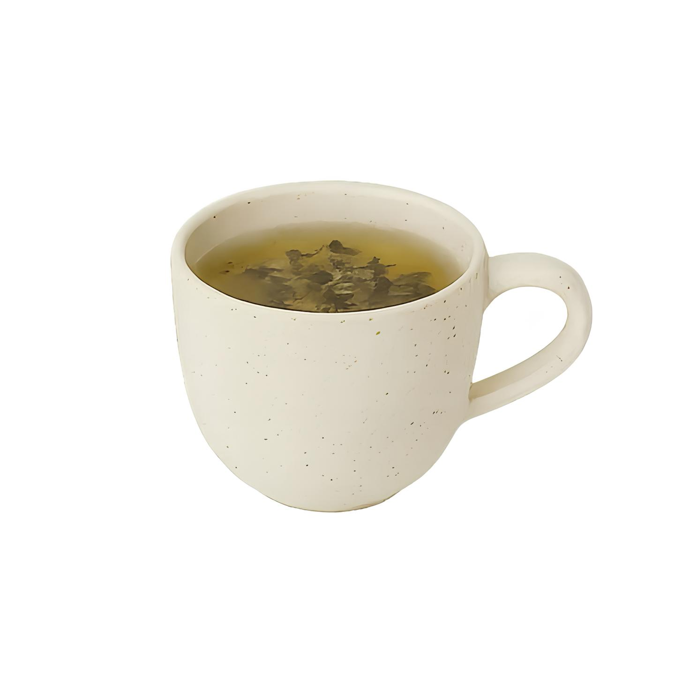

Зеленый чай
Нежный зеленый чай с травянистыми нотами и освежающим послевкусием. Идеален для утреннего пробуждения и вечерней релаксации.
Состав:
- Листья зеленого чая
- Натуральные травы
- Цветки жасмина
Объем:
О зеленом чае
Наш зеленый чай собирается на высокогорных плантациях Китая, где идеальные климатические условия создают неповторимый вкус и аромат. Каждый листок проходит минимальную обработку, что позволяет сохранить все природные полезные вещества.
Чай заваривается при температуре 80°C, что раскрывает его нежный вкус без горечи. Идеальное время заваривания - 2-3 минуты для получения насыщенного, но не терпкого напитка.
Мы предлагаем как чистый зеленый чай, так и с добавлением натурального жасмина для более цветочного аромата.
Польза для здоровья
| Антиоксиданты | Высокое содержание |
| Витамины | C, B2, E, бета-каротин |
| Минералы | Кальций, магний, железо |
| Кофеин | Умеренное количество |
Полезные свойства:
- Укрепление иммунной системы
- Улучшение метаболизма
- Антиоксидантное действие
- Снижение уровня стресса
- Улучшение концентрации
Отзывы покупателей
Прекрасный зеленый чай! Не горчит, имеет нежный аромат. Пью каждое утро вместо кофе - заряд бодрости на весь день!
Очень качественный чай. Чувствуется, что листья свежие и правильно обработанные. Рекомендую любителям зеленого чая.
Пью этот чай уже месяц и заметила улучшение самочувствия. Кожа стала лучше, появилось больше энергии. Отличное качество!